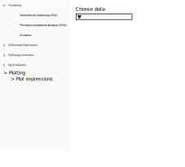
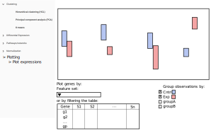

Some ideas for an additional frontend-only plotting module
I could see this being the output view for the normalization methods, but maybe it's better to make this as an additional "analysis" like the others? e.g. adding to the left-side menu
Here, the dropdown would give a list of options for files of type MTX, I_MTX, EXP_MTX, etc. (any numerical matrix)

After choosing the matrix, I suppose we could do two things:
- Make a request to api/resources/<uuid>/contents/?page=1 to get the initial boxplot of expressions for "random" genes.
- Do not show the initial boxplot, but instead ask them to filter the table or select a FeatureSet from a dropdown. Additionally, could ask them to choose ObservationSets. When they are done with their choices, click "plot"
The second option probably makes the most sense (instead of wasting time plotting random data).
One consideration in terms of performance-- does it make more sense to get everything and then cache it front-end (the old MEV seems to do that)? Alternatively, I could look into caching mechanisms on the backend...loading the file from disk each time a request is made could be slow.
Anyway, if the user does not select any ObservationSets, then we create a boxplot showing the distribution of expressions across all samples (for the selected genes).
If the user selected more than one ObservationSet, then create a boxplot like we currently do for the differential expression analyses. Ideally, we could have any number of ObservationSets shown in the plot.
